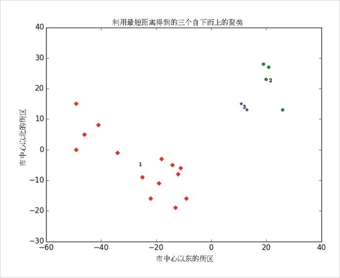
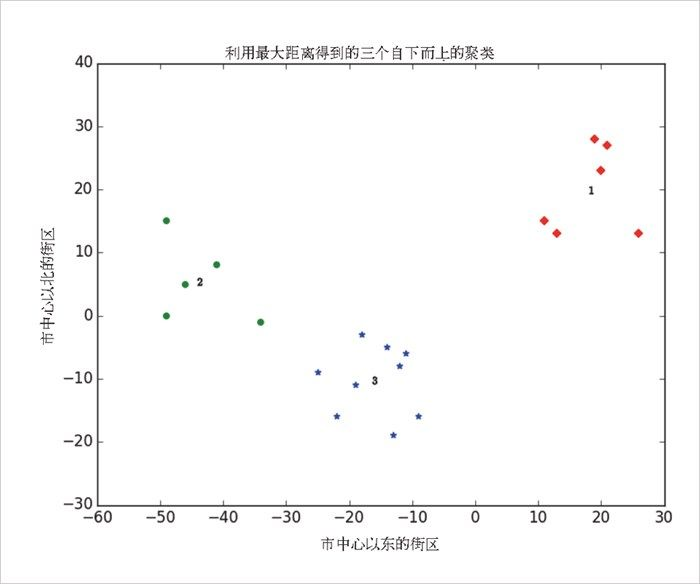

以上的 bottom_up_clustering 的实现代码相对来说已经很简单了，但是计算效率依然低得吓人。特别是，在每一步它都要重新计算每对输入之间的距离。更有效的实现方法是，预先算出每对输入之间的距离，然后在 cluster_distance 里面进行查找。一个真正高效的实现方法可能还需要存储上一步的 cluster_distance 。
以上的 bottom_up_clustering 的实现代码相对来说已经很简单了，但是计算效率依然低得吓人。特别是，在每一步它都要重新计算每对输入之间的距离。更有效的实现方法是，预先算出每对输入之间的距离，然后在 cluster_distance 里面进行查找。一个真正高效的实现方法可能还需要存储上一步的 cluster_distance 。19.6 自下而上的分层聚类
另一种聚类方法是采用自下而上的方式“培养”聚类，为此，我们可以借助下列方式：
1. 利用每个输入构成一个聚类，当然每个聚类只包含一个元素；
2. 只要还剩余多个聚类，就找出最接近的两个，并将它们合二为一。
最后，我们将得到一个包含所有输入的巨大的聚类。如果我们将合并顺序记录下来，就可以通过拆分的方法来重建任意数量的聚类。举例来说，如果我们想得到 3 个聚类，那么只要撤销最后两次合并就可以了。
我们将使用一种非常简单的方法来表示聚类。首先，我们的数值将进入叶 （leaf）聚类中，这时我们将其表示为一元组：
leaf1 = ([10, 20],) # 要创建一元组，需要在末尾加一个逗号
leaf2 = ([30, -15],) # 否则Python会把括号当成单纯的括号
我们通过合并 上面的聚类来培育新的聚类，并将其记为二元组（合并次序，子聚类）：
merged = (1, [leaf1, leaf2])
我们稍后会介绍合并次序，但现在不妨先来创建一些辅助函数：
def is_leaf(cluster):
"""a cluster is a leaf if it has length 1"""
return len(cluster) == 1
def get_children(cluster):
"""returns the two children of this cluster if it's a merged cluster;
raises an exception if this is a leaf cluster"""
if is_leaf(cluster):
raise TypeError("a leaf cluster has no children")
else:
return cluster[1]
def get_values(cluster):
"""returns the value in this cluster (if it's a leaf cluster)
or all the values in the leaf clusters below it (if it's not)"""
if is_leaf(cluster):
return cluster # 已经是一个包含值的一元组
else:
return [value
for child in get_children(cluster)
for value in get_values(child)]
为了合并相距最近的聚类，我们需要明确聚类之间的距离的概念。为此，我们将使用两个聚类的元素之间的最小 距离，据此将两个挨得最近的聚类合并（但有时会产生巨大的链式聚类，但是聚类之间却挨得不是很紧）。如果想得到紧凑的球状聚类，可使用最大 距离，而不是最小距离，因为使用最大距离合并聚类时，它会尽力将两者塞进一个最小的球中。实际上，这两种距离都很常用，就像平均 距离也很常用一样：
def cluster_distance(cluster1, cluster2, distance_agg=min):
"""compute all the pairwise distances between cluster1 and cluster2
and apply _distance_agg_ to the resulting list"""
return distance_agg([distance(input1, input2)
for input1 in get_values(cluster1)
for input2 in get_values(cluster2)])
我们将借助合并次序踪迹（slot）来跟踪合并的顺序。这个数字越小，表示合并的次序越靠后。这意味着，当我们想分拆聚类的时候，可以根据合并次序的值，从最小到最大依次进行。由于叶聚类不是合并而来的（这意味着无需分拆它们），因此，我们将它们合并次序的值规定为无穷大：
def get_merge_order(cluster):
if is_leaf(cluster):
return float('inf')
else:
return cluster[0] # merge_order是二元组中的第一个元素
现在我们可以创建聚类算法了：
def bottom_up_cluster(inputs, distance_agg=min):
# 最开始每个输入都是一个叶聚类/一元组
clusters = [(input,) for input in inputs]
# 只要剩余一个以上的聚类……
while len(clusters) > 1:
# 就找出最近的两个聚类
c1, c2 = min([(cluster1, cluster2)
for i, cluster1 in enumerate(clusters)
for cluster2 in clusters[:i]],
key=lambda (x, y): cluster_distance(x, y, distance_agg))
# 从聚类列表中将它们移除
clusters = [c for c in clusters if c != c1 and c != c2]
# 使用merge_order = 剩余聚类的数目来合并它们
merged_cluster = (len(clusters), [c1, c2])
# 并添加它们的合并
clusters.append(merged_cluster)
# 当只剩一个聚类时，返回它
return clusters[0]
它的使用方法非常简单：
base_cluster = bottom_up_cluster(inputs)
这将得到一个聚类，简单表示如下：
(0, [(1, [(3, [(14, [(18, [([19, 28],),
([21, 27],)]),
([20, 23],)]),
([26, 13],)]),
(16, [([11, 15],),
([13, 13],)])]),
(2, [(4, [(5, [(9, [(11, [([-49, 0],),
([-46, 5],)]),
([-41, 8],)]),
([-49, 15],)]),
([-34, -1],)]),
(6, [(7, [(8, [(10, [([-22, -16],),
([-19, -11],)]),
([-25, -9],)]),
(13, [(15, [(17, [([-11, -6],),
([-12, -8],)]),
([-14, -5],)]),
([-18, -3],)])]),
(12, [([-13, -19],),
([-9, -16],)])])])])
对于每一个合并而来的聚类，我都会将其子聚类纵向连接。当我们说“0 号聚类”为合并次序为 0 的聚类时候，你可以将此理解为：
0 号聚类是由 1 号聚类和 2 号聚类合并得到的；
1 号聚类是由 3 号聚类和 16 号聚类合并得到的；
16 号聚类是由叶节点 [11, 15] 和叶节点 [13, 13] 合并得到的。
以此类推……
因为我们有 20 个输入，所以只要经过 19 次合并，便能得到这个聚类。第一个合并而来的聚类是通过合并叶节点 [19, 28] 和叶节点 [21, 27] 得到的。而最后一个合并而来的聚类则是 0 号聚类。
但是，一般情况下我们不喜欢这种繁琐的文字表达方法。（不过话又说回来，对于创建一个用户友好型的可视化聚类分层结构，这也算是一个有趣的练习。）下面让我们来写一个函数，使其可以通过执行适当次数的分拆动作来产生任意数量的聚类：
def generate_clusters(base_cluster, num_clusters):
# 开始的列表只有基本聚类
clusters = [base_cluster]
# 只要我们还没有足够的聚类……
while len(clusters) < num_clusters:
# 选择上一个合并的聚类
next_cluster = min(clusters, key=get_merge_order)
# 将它从列表中移除
clusters = [c for c in clusters if c != next_cluster]
# 并将它的子聚累添加到列表中（即拆分它）
clusters.extend(get_children(next_cluster))
# 一旦我们有了足够的聚类……
return clusters
举例来说，如果我们想要生成三个聚类，可以使用下列代码：
three_clusters = [get_values(cluster)
for cluster in generate_clusters(base_cluster, 3)]
利用下面的代码，我们可以轻松绘制其图形：
for i, cluster, marker, color in zip([1, 2, 3],
three_clusters,
['D','o','*'],
['r','g','b']):
xs, ys = zip(*cluster) # 魔法般的解压方式
plt.scatter(xs, ys, color=color, marker=marker)
# 向聚类的均值添加一个数字
x, y = vector_mean(cluster)
plt.plot(x, y, marker='$' + str(i) + '$', color='black')
plt.title("利用最短距离得到的三个自下而上的聚类")
plt.xlabel("市中心以东的街区")
plt.ylabel("市中心以北的街区")
plt.show()
与 k - 均值算法相比，我们得到了一个大不相同的结果，具体如图 19-6 所示。

图 19-6：利用最短距离得到的三个自下而上的聚类
正如我们上面提到的，这是因为在 cluster_distance 函数中使用参数 min 时往往会得到链状聚类。相反，如果我们使用参数 max （这能得到更加紧凑的聚类），将得到看上去与图 19-7 所示的 3-means 无异的结果。

图 19-7：利用最大距离得到的三个自下而上的聚类